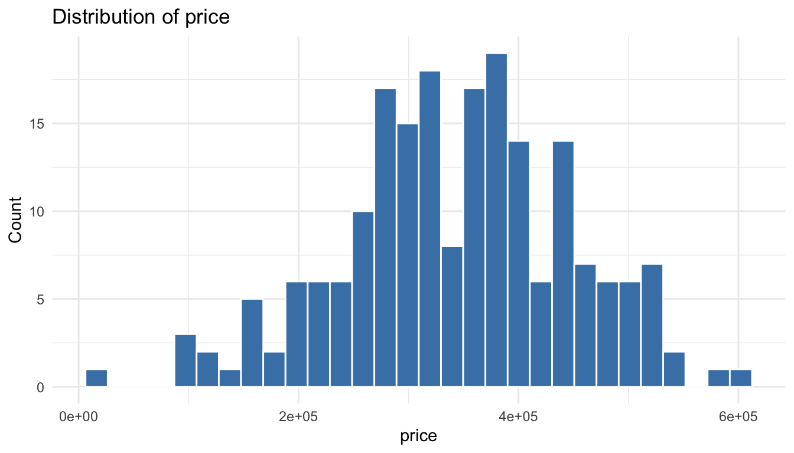
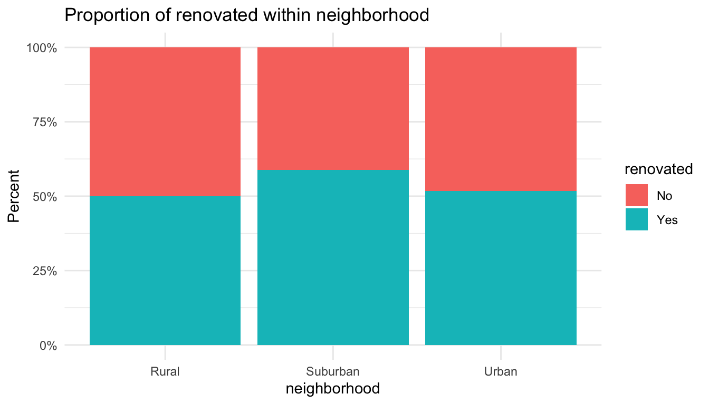
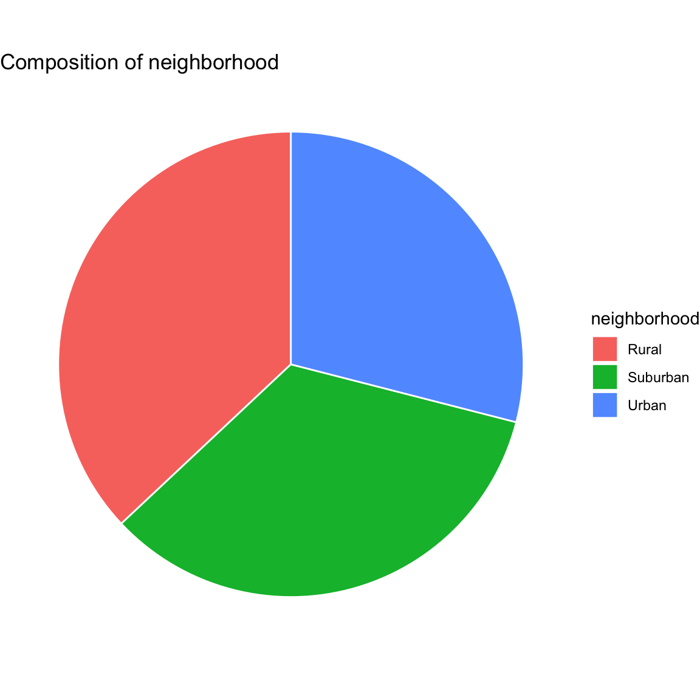
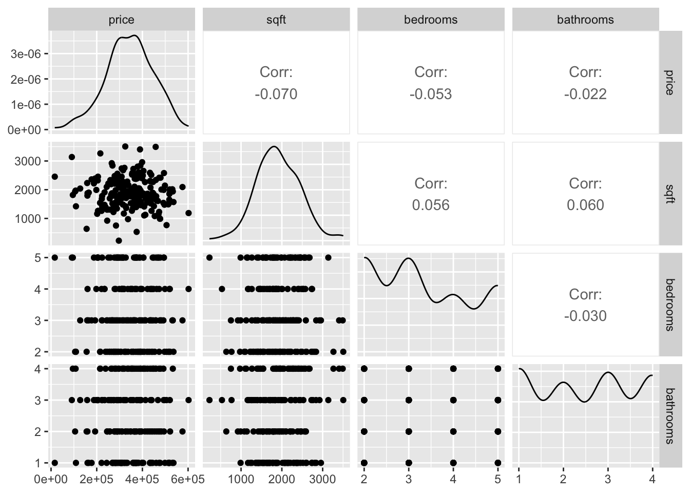

# Run once if needed
install.packages(c(
"tidyverse", "haven", "janitor", "sjlabelled", "skimr",
"gtsummary", "rstatix", "GGally", "performance", "report"
))5 Statistical Analysis
This handout uses well-validated R packages so students can run core analyses with minimal code. The goal is to focus on interpretation rather than writing long scripts.
How to read this handout:
- Each section starts with a question the analysis answers.
- Each section uses as few lines of R as possible.
- Each section ends with what to report in plain language.
5.1 Packages You Need
Install once if needed:
Load at the start of each session:
library(tidyverse)
library(haven)
library(janitor)
library(sjlabelled)
library(skimr)
library(gtsummary)
library(rstatix)
library(GGally)
library(performance)
library(report)5.2 Import SPSS Data
Place housing.sav in your project folder. The code below checks several common locations.
sav_candidates <- c(
"housing.sav",
"data/housing.sav",
"Data/housing.sav",
"../housing.sav",
"~/Downloads/housing.sav"
)
sav_path <- sav_candidates[file.exists(sav_candidates)][1]
if (is.na(sav_path)) {
message("`housing.sav` not found in common locations. Using a small simulated dataset so this chapter remains runnable.")
set.seed(5244)
housing <- tibble(
price = round(rnorm(200, mean = 350000, sd = 90000), 0),
sqft = round(rnorm(200, mean = 1900, sd = 500), 0),
bedrooms = sample(2:5, 200, replace = TRUE),
bathrooms = sample(1:4, 200, replace = TRUE),
neighborhood = sample(c("Urban", "Suburban", "Rural"), 200, replace = TRUE),
renovated = sample(c("No", "Yes"), 200, replace = TRUE)
)
} else {
housing <- haven::read_sav(sav_path)
}
housing <- housing %>% janitor::clean_names()
# Convert SPSS labelled variables to factors for easier group analyses.
housing <- housing %>% mutate(across(where(is.labelled), as_factor))
dim(housing)[1] 200 6head(housing)# A tibble: 6 × 6
price sqft bedrooms bathrooms neighborhood renovated
<dbl> <dbl> <int> <int> <chr> <chr>
1 407820 1414 3 4 Suburban No
2 288293 1346 3 3 Suburban Yes
3 273725 1393 2 3 Urban Yes
4 223753 1781 5 3 Rural No
5 288669 2333 2 3 Urban No
6 334433 1947 3 4 Urban No 5.3 Step 1: Understand Variables
Question: What variables do we have, and what type is each variable?
Why this matters: Your test choice depends on variable type (numeric vs categorical).
glimpse(housing)Rows: 200
Columns: 6
$ price <dbl> 407820, 288293, 273725, 223753, 288669, 334433, 494532, 1…
$ sqft <dbl> 1414, 1346, 1393, 1781, 2333, 1947, 2580, 2040, 1783, 139…
$ bedrooms <int> 3, 3, 2, 5, 2, 3, 5, 3, 3, 2, 4, 3, 3, 4, 4, 4, 2, 2, 2, …
$ bathrooms <int> 4, 3, 3, 3, 3, 4, 2, 3, 1, 4, 1, 1, 1, 1, 1, 4, 3, 2, 2, …
$ neighborhood <chr> "Suburban", "Suburban", "Urban", "Rural", "Urban", "Urban…
$ renovated <chr> "No", "Yes", "Yes", "No", "No", "No", "No", "No", "No", "…skimr::skim(housing)| Name | housing |
| Number of rows | 200 |
| Number of columns | 6 |
| _______________________ | |
| Column type frequency: | |
| character | 2 |
| numeric | 4 |
| ________________________ | |
| Group variables | None |
Variable type: character
| skim_variable | n_missing | complete_rate | min | max | empty | n_unique | whitespace |
|---|---|---|---|---|---|---|---|
| neighborhood | 0 | 1 | 5 | 8 | 0 | 3 | 0 |
| renovated | 0 | 1 | 2 | 3 | 0 | 2 | 0 |
Variable type: numeric
| skim_variable | n_missing | complete_rate | mean | sd | p0 | p25 | p50 | p75 | p100 | hist |
|---|---|---|---|---|---|---|---|---|---|---|
| price | 0 | 1 | 343268.42 | 103267.14 | 16357 | 278802.75 | 349722.5 | 408791.75 | 602259 | ▁▂▇▆▂ |
| sqft | 0 | 1 | 1907.38 | 543.08 | 226 | 1538.75 | 1865.0 | 2272.00 | 3505 | ▁▅▇▅▁ |
| bedrooms | 0 | 1 | 3.31 | 1.12 | 2 | 2.00 | 3.0 | 4.00 | 5 | ▇▇▁▅▆ |
| bathrooms | 0 | 1 | 2.48 | 1.14 | 1 | 1.00 | 3.0 | 3.25 | 4 | ▇▇▁▇▇ |
Identify numeric and categorical variables for analysis:
numeric_vars <- housing %>% select(where(is.numeric)) %>% names()
cat_vars <- housing %>% select(where(~ is.factor(.) || is.character(.))) %>% names()
numeric_vars[1] "price" "sqft" "bedrooms" "bathrooms"cat_vars[1] "neighborhood" "renovated" 5.4 Step 2: Choose an Outcome Variable
Question: Which variable are we trying to explain or predict?
For housing data, the outcome is often price, value, or cost. The code tries these names first and then defaults to the first numeric variable.
target_candidates <- names(housing)[str_detect(names(housing), "price|value|cost|rent")]
outcome_var <- if (length(target_candidates) > 0) {
target_candidates[1]
} else {
numeric_vars[1]
}
outcome_var[1] "price"5.5 Step 3: Descriptive Statistics (Low-Code Tables)
Question: What does the sample look like before we run inferential tests?
Interpretation tip:
- Numeric variables: read mean/median/spread.
- Categorical variables: read counts and percentages.
housing %>%
select(all_of(c(outcome_var, head(setdiff(numeric_vars, outcome_var), 4), head(cat_vars, 2)))) %>%
tbl_summary(missing = "ifany")| Characteristic | N = 2001 |
|---|---|
| price | 349,723 (278,715, 409,640) |
| sqft | 1,865 (1,538, 2,274) |
| bedrooms | |
| 2 | 61 (31%) |
| 3 | 60 (30%) |
| 4 | 36 (18%) |
| 5 | 43 (22%) |
| bathrooms | |
| 1 | 54 (27%) |
| 2 | 45 (23%) |
| 3 | 51 (26%) |
| 4 | 50 (25%) |
| neighborhood | |
| Rural | 74 (37%) |
| Suburban | 68 (34%) |
| Urban | 58 (29%) |
| renovated | 107 (54%) |
| 1 Median (Q1, Q3); n (%) | |
ggplot(housing, aes(x = .data[[outcome_var]])) +
geom_histogram(bins = 30, color = "white", fill = "steelblue") +
labs(
title = paste("Distribution of", outcome_var),
x = outcome_var,
y = "Count"
) +
theme_minimal()
5.6 Step 4: Categorical Analysis (Cross-Tab + Chi-Square)
Question: Are two categorical variables associated?
Use this when both variables are categories (for example, neighborhood and renovated).
chi_candidates <- housing %>%
select(where(~ is.factor(.) || is.character(.))) %>%
keep(~ n_distinct(., na.rm = TRUE) >= 2) %>%
names()
chi_candidates[1] "neighborhood" "renovated" if (length(chi_candidates) >= 2) {
cat_var1 <- chi_candidates[1]
cat_var2 <- chi_candidates[2]
cat_df <- housing %>%
select(all_of(c(cat_var1, cat_var2))) %>%
drop_na() %>%
mutate(across(everything(), as.factor))
# Easy-to-read cross-tab with row percentages
cat_df %>%
janitor::tabyl(.data[[cat_var1]], .data[[cat_var2]]) %>%
janitor::adorn_percentages("row") %>%
janitor::adorn_pct_formatting(digits = 1)
# Chi-square test of association (robust to character columns)
chi_table <- table(cat_df[[cat_var1]], cat_df[[cat_var2]])
chi_table
stats::chisq.test(chi_table)
} else {
message("Need at least two categorical variables for cross-tab and chi-square.")
}
Pearson's Chi-squared test
data: chi_table
X-squared = 1.2126, df = 2, p-value = 0.5454Bar chart (recommended for categorical comparisons):
if (exists("cat_var1") && exists("cat_var2")) {
ggplot(housing, aes(x = .data[[cat_var1]], fill = .data[[cat_var2]])) +
geom_bar(position = "fill") +
scale_y_continuous(labels = scales::percent) +
labs(
title = paste("Proportion of", cat_var2, "within", cat_var1),
x = cat_var1,
y = "Percent",
fill = cat_var2
) +
theme_minimal()
}
Pie chart (simple composition view):
if (exists("cat_var1")) {
housing %>%
count(.data[[cat_var1]]) %>%
ggplot(aes(x = "", y = n, fill = .data[[cat_var1]])) +
geom_col(width = 1, color = "white") +
coord_polar(theta = "y") +
labs(title = paste("Composition of", cat_var1), fill = cat_var1) +
theme_void()
}
5.7 Step 5: Independent-Samples t-test
Question: Is the mean of a numeric outcome different across two groups?
If a categorical variable has exactly two levels (for example, renovated = Yes/No), we can compare mean outcome between groups.
binary_candidates <- housing %>%
select(where(~ is.factor(.) || is.character(.))) %>%
keep(~ n_distinct(., na.rm = TRUE) == 2) %>%
names()
binary_candidates[1] "renovated"if (length(binary_candidates) > 0) {
group_var <- binary_candidates[1]
housing %>%
select(all_of(c(outcome_var, group_var))) %>%
drop_na() %>%
t_test(as.formula(paste(outcome_var, "~", group_var)), detailed = TRUE)
} else {
message("No binary grouping variable found for a t-test.")
}# A tibble: 1 × 15
estimate estimate1 estimate2 .y. group1 group2 n1 n2 statistic p
* <dbl> <dbl> <dbl> <chr> <chr> <chr> <int> <int> <dbl> <dbl>
1 -18853. 333182. 352035. price No Yes 93 107 -1.28 0.203
# ℹ 5 more variables: df <dbl>, conf.low <dbl>, conf.high <dbl>, method <chr>,
# alternative <chr>5.8 Step 6: One-Way ANOVA
Question: Is the mean of a numeric outcome different across 3 or more groups?
When a categorical variable has 3 or more groups, compare group means with ANOVA.
anova_candidates <- housing %>%
select(where(~ is.factor(.) || is.character(.))) %>%
keep(~ n_distinct(., na.rm = TRUE) >= 3) %>%
names()
anova_candidates[1] "neighborhood"if (length(anova_candidates) > 0) {
anova_var <- anova_candidates[1]
model_aov <- housing %>%
select(all_of(c(outcome_var, anova_var))) %>%
drop_na() %>%
anova_test(as.formula(paste(outcome_var, "~", anova_var)))
model_aov
housing %>%
select(all_of(c(outcome_var, anova_var))) %>%
drop_na() %>%
tukey_hsd(as.formula(paste(outcome_var, "~", anova_var)))
} else {
message("No 3+ level categorical variable found for ANOVA.")
}# A tibble: 3 × 9
term group1 group2 null.value estimate conf.low conf.high p.adj p.adj.signif
* <chr> <chr> <chr> <dbl> <dbl> <dbl> <dbl> <dbl> <chr>
1 neigh… Rural Subur… 0 -8668. -49811. 32474. 0.873 ns
2 neigh… Rural Urban 0 -108. -43058. 42843. 1 ns
3 neigh… Subur… Urban 0 8561. -35215. 52336. 0.889 ns 5.9 Step 7: Correlation Analysis
Question: How strongly are numeric variables linearly related?
Examine linear relationships among numeric variables.
num_df <- housing %>% select(where(is.numeric))
if (ncol(num_df) >= 2) {
num_df %>%
cor_mat() %>%
cor_get_pval()
GGally::ggpairs(num_df %>% select(head(names(.), 5)))
} else {
message("Not enough numeric variables for correlation analysis.")
}
5.10 Step 8: Multiple Linear Regression
Question: Which predictors are associated with the outcome when considered together?
Build one model to predict the outcome using up to two numeric and one categorical predictor.
predictor_pool <- setdiff(names(housing), outcome_var)
num_predictors <- housing %>%
select(all_of(predictor_pool)) %>%
select(where(is.numeric)) %>%
names() %>%
head(2)
cat_predictor <- housing %>%
select(all_of(predictor_pool)) %>%
select(where(~ is.factor(.) || is.character(.))) %>%
names() %>%
head(1)
model_predictors <- c(num_predictors, cat_predictor)
model_predictors[1] "sqft" "bedrooms" "neighborhood"if (length(model_predictors) >= 1) {
reg_formula <- as.formula(paste(outcome_var, "~", paste(model_predictors, collapse = " + ")))
reg_fit <- lm(reg_formula, data = housing)
tbl_regression(reg_fit)
report(reg_fit)
} else {
message("No usable predictors found for regression.")
}We fitted a linear model (estimated using OLS) to predict price with sqft,
bedrooms and neighborhood (formula: price ~ sqft + bedrooms + neighborhood).
The model explains a statistically not significant and very weak proportion of
variance (R2 = 8.79e-03, F(4, 195) = 0.43, p = 0.785, adj. R2 = -0.01). The
model's intercept, corresponding to sqft = 0, bedrooms = 0 and neighborhood =
Rural, is at 3.86e+05 (95% CI [3.16e+05, 4.55e+05], t(195) = 10.95, p < .001).
Within this model:
- The effect of sqft is statistically non-significant and negative (beta =
-12.30, 95% CI [-39.23, 14.63], t(195) = -0.90, p = 0.369; Std. beta = -0.06,
95% CI [-0.21, 0.08])
- The effect of bedrooms is statistically non-significant and negative (beta =
-4754.66, 95% CI [-17773.50, 8264.18], t(195) = -0.72, p = 0.472; Std. beta =
-0.05, 95% CI [-0.19, 0.09])
- The effect of neighborhood [Suburban] is statistically non-significant and
negative (beta = -8806.08, 95% CI [-43266.60, 25654.45], t(195) = -0.50, p =
0.615; Std. beta = -0.09, 95% CI [-0.42, 0.25])
- The effect of neighborhood [Urban] is statistically non-significant and
negative (beta = -767.74, 95% CI [-36832.56, 35297.08], t(195) = -0.04, p =
0.967; Std. beta = -7.43e-03, 95% CI [-0.36, 0.34])
Standardized parameters were obtained by fitting the model on a standardized
version of the dataset. 95% Confidence Intervals (CIs) and p-values were
computed using a Wald t-distribution approximation.5.11 Step 9: Regression Assumption Checks
Question: Are key model assumptions reasonable?
Interpretation tip: If diagnostics look poor, report this and consider transformations, robust methods, or simpler models.
if (exists("reg_fit")) {
check_model(reg_fit)
check_collinearity(reg_fit)
} else {
message("Run regression section first to generate diagnostics.")
}# Check for Multicollinearity
Low Correlation
Term VIF VIF 95% CI adj. VIF Tolerance Tolerance 95% CI
sqft 1.01 [1.00, 171.54] 1.01 0.99 [0.01, 1.00]
bedrooms 1.01 [1.00, 1671.38] 1.01 0.99 [0.00, 1.00]
neighborhood 1.02 [1.00, 30.10] 1.01 0.98 [0.03, 1.00]5.12 Reporting Template (Simple)
Use this structure to report your findings:
- Research question and variables.
- Descriptive table from
tbl_summary(). - Categorical association results from cross-tab and chi-square (
chisq_test()). - Mean-comparison results from
t_test()oranova_test()and post-hoc tests. - Regression table from
tbl_regression()and narrative fromreport(). - Practical interpretation in context (for example, what a one-unit change in a predictor means for housing price).
- Limitations and next steps (missing data, model assumptions, omitted variables).
5.13 Why This Version Is Easier
- Most analyses are one function call.
- Output tables are publication-ready by default.
- Assumption checks are automated with
performance. - You can replace auto-selected variables with your planned variables once codebook names are confirmed.